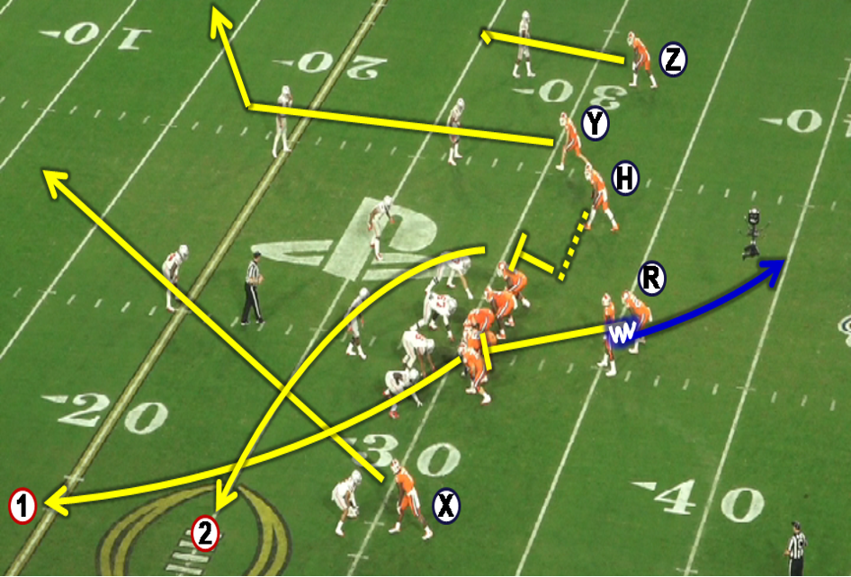

1 Military Assessment Overview
Both Joint Publication 5-0 and Joint Publication 3-0 provide the following definitions for assessment:
Determination of the progress toward accomplishing a task, creating a condition, or achieving an objective. A continuous process that measures the overall effectiveness of employing capabilities during military operations (Joint Chiefs of Staff 2025).
Assessment is a continuous and actionable process that measures the overall effectiveness of the joint force. The process involves monitoring and evaluating the current situation and progress toward the objectives. The results can help determine whether an activity contributes to the desired effects or progress toward an objective. Assessment occurs on two distinct planes. First, the [Joint Force Commander] (JFC) continuously evaluates the approach and what actions are necessary to succeed. Once the JFC determines the approach remains valid, then the JFC can assess all the supporting activities. If the approach is no longer valid or relevant, there is no reason to examine any of the supporting activities (Joint Chiefs of Staff 2022).
From these definitions, several key points emerge:
Assessment is a continuous process that evaluates current actions and infers their contributions to future goals.
Assessment involves evaluating the utilization of resources (forces, time, funding).
Assessment focuses on measuring the overall effectiveness of joint force actions toward achieving desired conditions or objectives.
1.1 Motivating Problem
How to gain a better understanding of the analytic uncertainty inherent with military strategies, plans, and operations so that the commander and staff have a better understanding of the effectiveness of their operation or campaign (Croft 2018).
1.2 What We will learn
Interestingly, neither publication offers a formal definition for measurement. To fill this conceptual gap, we apply Hubbard’s definition from the field of decision science: “A quantitatively expressed reduction in uncertainty based on one or more observations” (Hubbard 2014).
This framing aligns closely with the role assessment plays in military planning: reducing uncertainty to inform decisions about adapting or sustaining current operations.
In this chapter, we will explore the relationship between uncertainty and assessment and identify what types of assessment are appropriate at different levels of military operations.
1.3 Assessment as a Prerequisite to Adaptation
Combatant Command Campaign Plans (CCPs) and country plans are dynamic, continuously evolving through cycles of implementation, evaluation, and revision. Because plans rarely unfold as anticipated, Combatant Command (CCMD) planners must extend their planning horizon annually to maintain a forward-looking posture. This dual imperative requires balancing the execution of ongoing operations with the need to plan for future contingencies.
In this environment, assessment becomes a prerequisite to effective adaptation. But assessment is not just about measuring performance or progress—it is fundamentally about measuring and reducing uncertainty. In military operations, uncertainty arises from the complexity of the operational environment, the unpredictability of adversaries, and the limitations of available information. By systematically observing and evaluating how operations affect outcomes, assessment helps commanders determine whether current approaches are likely to succeed—or whether they must be adjusted or abandoned.
Following Hubbard’s definition, measurement is “a quantitatively expressed reduction in uncertainty based on one or more observations” (Hubbard 2014). This perspective is particularly relevant for campaign assessment: the goal is not only to track implementation but to reduce ambiguity about what works, what doesn’t, and why.
The following 13 propositions, summarized from contemporary scholarship (Hickey, Bradford, and Perez 2019), offer a theoretical framework for integrating uncertainty into military design and assessment:
- Environment as Obstacle Course – Military environments are composed of dynamic systems that commanders must navigate.
- Environment as Landscape to Change – Commanders are tasked not only with navigating but also with reshaping the environment.
- Interventions as Causal Hypotheses – Every military action implies a theory of cause and effect.
- Need for Causal Literacy – Military professionals must be trained to craft and evaluate causal claims.
- Typology of Causal Logics – Reductive causation (structural, institutional, ideational, psychological) underpins military reasoning.
- Mastering Causal Frameworks – Commanders must understand causal logics to assess and adapt effectively.
- Complexity Limits Certainty – The world’s complexity reduces the reliability of single-cause explanations.
- Assessment as Experimentation – Interventions should be approached as hypotheses tested through assessment.
- Focus on Political Ends – Military efforts must align with and support broader political objectives.
- Reevaluate Measures of Effectiveness (MoEs) and Measures of Performance (MoPs) – Traditional measures of effectiveness and performance are insufficient for complex goals.
- Assessment is Difficult but Essential – Despite challenges, continuous assessment is indispensable.
- Integration of Planning and Assessment – Planners and assessors should work collaboratively throughout the planning cycle.
- ‘For the Sake Of’ vs. ‘In Order To’ Objectives – Objectives should prioritize purpose and direction over narrowly defined end-states.
These propositions highlight that uncertainty is not a problem to be eliminated, but a reality to be engaged thoughtfully. Assessment is not merely technical—it is cognitive, adaptive, and continuous. It helps leaders make decisions in complex and unpredictable environments, not by providing perfect knowledge, but by systematically reducing what is unknown.
Ultimately, campaign assessment enables the Combatant Commander (CCDR) to make strategic recommendations to the Secretary of Defense (SecDef) and broader Department of Defense (DoD) leadership. These insights guide both internal planning cycles and higher-level decisions about force structure, budgeting, and legislative requests through the Future Years Defense Program (FYDP).
1.4 Understanding Analytic Uncertainty
According to Croft (2018), analytic uncertainty is “a type of uncertainty that consists of five components of deep and surface uncertainty that is useful for planning and military assessments.” Table 1.1 lists those five elements, which we will discuss in detail in the following section.
| Deep Uncertainty (unknowables) | Surface Uncertainty (unknowns) |
|---|---|
| Complexity | Factual Uncertainty |
| Non-linearity | Precision Uncertainty |
| Adaptation |
1.4.1 Components
1.4.1.1 Surface Uncertainty
Surface uncertainty refers to uncertainty that is visible and acknowledged, but not deeply understood. It often arises from ambiguities or contradictions in observable data or misalignment between facts and interpretation. Surface uncertainty is the “tip of the iceberg” — it’s apparent, but may conceal deeper issues beneath.
Some key characteristics of surface uncertainty are:
Often linked to conflicting or unclear indicators.
Might be recognized by decision-makers but not resolved.
Can result from over-reliance on dashboards, over-simplified metrics, or data with unclear context.
If not properly mitigated, surface uncertainty can lead to:
Risk of misinterpretation: Decision-makers may prematurely resolve uncertainty by defaulting to assumptions or bias.
Planning fragility: Plans built on surface-level observations without deeper validation may be brittle under stress.
Cognitive bias exposure: It invites confirmation bias and motivated reasoning when stakeholders pick evidence that supports preferred narratives.
As a mitigation measure, we will then learn more about the components of surface uncertainty: factual uncertainty and precision uncertainty.
1.4.1.1.1 Factual Uncertainty
Factual uncertainty arises when information is incomplete, inaccurate, outdated, or ambiguous. It’s about not having the correct facts to begin with, and it reflects gaps in what we know or what we’re aware of. Some examples of this type of uncertainty are:
Missing intelligence about an adversary’s troop movement.
Lack of updated terrain maps.
Ambiguous language in diplomatic communication.
Based on Figure 1.1, this form of uncertainty corresponds to known unknowns (things we are aware of but don’t understand) and unknown unknowns (things we are neither aware of nor understand).
1.4.1.1.2 Precision Uncertainty
Precision uncertainty refers to situations where we have quantitative information, but the information is imprecise or subject to variation. This type of uncertainty often emerges when using probabilistic models or estimates that inherently involve a degree of variability or error.
Some examples of this type of uncertainty are:
Forecasting casualty estimates with wide confidence intervals.
Using intelligence or other staff estimate reports that assign vague probabilities (e.g., “likely”).
Planning based on weather predictions with large error margins.
In practice, analysts in the above situations can use some of the models depicted in Figure 1.2, but these models generally are not utilized in assessment frameworks. A way to mitigate these risks in assessment frameworks would be to use techniques like Bayesian models and Monte Carlo simulations.
1.4.1.2 Deep Uncertainty
Deep uncertainty arises when stakeholders do not know or cannot agree on:
The system model (how things work).
The probability distributions for key variables.
The value trade-offs involved in making decisions.
Unlike surface uncertainty, which is visible but unclear, deep uncertainty means the underlying mechanisms are fundamentally opaque or contested. It’s common in complex, dynamic military, geopolitical, and socio-technical systems.
1.4.1.2.1 Complexity
The operational environment consists of many interconnected parts whose relationships are not easily decomposed or predictable. Changes in one area can cause ripple effects elsewhere. Some examples of this component are:
A change in local governance affects regional security, economy, and foreign relations.
Coalition operations where each partner’s decisions affect the others in non-obvious ways.
By understanding this component, assessment analysts will begin to understand the difficulty in tracing cause and effect, and that emergent events are common even when they are not planned for (Air Land Sea Space Application Center 2020, 16, 21).
Figure 1.3 depicts a vital tool to mitigate the previously discussed risks, and that is systems thinking models. We will discuss these models more later in the course.
1.4.1.2.2 Non-Linearity
Inputs and outputs are not proportional — small actions can have significant effects or vice versa. The system exhibits unpredictable or chaotic behavior at times.
While it does not completely encapsulate this component, Figure 1.4 depicts a non-linear process. Other examples of this are:
A minor political assassination triggers a large-scale war.
Large troop increases fail to shift insurgent activity.
A key aspect of nonlinearity is that forecasting future events is highly error-prone, and success or failure may hinge on tipping points or threshold effects. To mitigate these risks, an assessment analyst needs to utilize methods and tools that lend themselves to range estimates and sensitivity analysis.
1.4.1.2.3 Adaptation
Actors within the system — including adversaries, allies, civilians, and even the organization itself — observe, learn, and change behavior in response to actions.
For instance:
An adversary adjusts tactics after observing drone strikes.
Local populations change cooperation patterns based on perceived legitimacy.
Furthermore, the environment is dynamic and responsive, and the adage of plans not making it past first contact still holds. A key mitigation for this concept involves systems thinking models and the development of an agile assessment framework.
1.4.2 Implications for Planning
By understanding the concept of surface uncertainty, assessment analysts can better define these components of uncertainty and ultimately measure them in a meaningful way. Analysts can also qualify risks and opportunities.
Similarly, understanding deep uncertainty at a conceptual level provides us with the means to better deal with it. According to Croft (2018):
The remedy that analysts must employ in the face of complexity, nonlinearity, and adaptation is theory. Theories, by their nature, are uncertain, and planners in early-stage operational design work must again avoid the assumption trap. By engaging with deep uncertainty, planners take on the challenge of building multiple worldviews as possible explanations of system behavior and change during conflict.
Ultimately, instead of relying on the process of creating and validating assumptions, assessment analysts can now leverage additional analytic tools that make the engineering of assessment frameworks based on the previous thirteen principles possible.
1.5 From Uncertainty to Theory
Given the previous explanations, we can now establish additional terms of reference based on the work of Hubbard (2014) and Croft (2018):
Analytic: Relating to or using analysis or logical reasoning.
Uncertainty: The lack of complete certainty, that is, the existence of more than one possibility. The “true” outcome/state/result/value is not known.
Risk: A state of uncertainty where some of the possibilities involve a loss, catastrophe, or other undesired outcome.
Opportunity: A state of uncertainty where some of the possibilities involve a favorable advance in effect, time to achievement, or other desired outcomes if facilitated by decision, engagement, or resources.
Measurement: A quantitatively expressed reduction in uncertainty based on one or more observations.
1.6 Types of Assessments and Who Performs Them
As shown in Figure 1.5, military assessments align with the levels of war, with the labels of strategic, operational, and tactical. Per joint doctrine, “assessment should link with adjacent levels, both to provide a conduit for guidance and information” (Joint Chiefs of Staff 2022).
While Figure 1.5 provides a way to visualize these interactions, we need some additional detail to delineate the types of assessments conducted at any one of the levels of warfare. @tbl-militaryAssessmentTypes displays four general kinds of assessments according to Paul and Matthews (2018).
| Assessment Type | Description |
|---|---|
| Staff Estimates | Does not require an objective. Provides situational awareness about a context, environment, or audience. Different types of estimates are possible; always include qualifying terms. |
| Performance Assessments | Performance assessments capture the extent of implementation or execution of a program, operation, activity, or investment (OAI). These assessments are descriptive and generated by the entity that is responsible for executing the program or OAI, and inform a progress assessment. |
| Effectiveness Assessments | Effectiveness assessments measure the contribution of a program or OAI towards meeting an objective. These assessments are diagnostic and generated by the staff directorates that are responsible for planning and monitoring the programs and OAIs over time. This assessment also informs a progress assessment. |
| Progress Assessments | Progress assessments measure toward one or more objectives. Progress assessments may include multiple programs or OAIs, provided they all contribute to achieving the objective(s). These assessments are diagnostic and validated by a cross-functional process. |
1.7 Linking Assessments Together
Figure 1.6 illustrates the interconnection of various assessments in a notional information flow diagram for a strategic command, such as a geographic combatant command. Here, service components provide performance assessments of OAIs, the command staff conducts effectiveness assessments of the command’s campaign, and a cross-functional team performs a progress assessment of the command’s objectives.
Underneath these general forms are numerous other assessments that are specific to certain joint functions or other matters, but these descriptions are suitable to describe the general assessment structure at the varying levels of warfare.
1.8 Practical Example
To enhance your understanding of the previously discussed concepts, we will run through a scenario based on something most Americans are familiar with: football. Below are the key stakeholders and examples of their perspectives about football operations.
1.8.1 National Football League (NFL)
Our Mission
We are all stewards of football. We unite people and inspire communities in the joy of the game by delivering the world’s most exciting sports and entertainment experience.
Our Responsibility Every member of the NFL community embraces our unique leadership role in society, and assumes the trust, character, and responsibility that comes with that role. We bring fans and communities from all walks of life together to celebrate a game that is constantly evolving, balancing the authenticity of tradition with the power of innovation (National Football League https://operations.nfl.com/inside-football-ops/nfl-operations/nfl-ops-honoring-the-game/).
1.8.2 NFL Team
OUR TEAM
Under the leadership of Sheila Hamp, the great granddaughter of Henry Ford, the Lions have ushered in an era of rebirth focused on creating an inclusive and equitable experience for employees, partners and fans. Building off the rich and diverse history of the city, the Lions embrace transparency and value contribution from all areas of the organization. We believe in the power of a pride, and acknowledge winning together takes understanding, acceptance, and teamwork. We believe in our “we” culture and are committed to building a new tradition that Detroit and Michigan can be proud of (Detroit Lions 2025).
1.8.3 Coaches and Players
“The only place that “success” comes before “work” is in the dictionary.” —Vince Lombardi
“You can learn a line from a win and a book from a defeat.” —Paul Brown
“When you win, nothing hurts.” —Joe Namath
“Set your goals high, and don’t stop til you get there” – —Bo Jackson
“To me, football is so much about mental toughness, it’s digging deep, it’s doing whatever you need to do to help a team win and that comes in a lot of shapes and forms.” —Tom Brady
